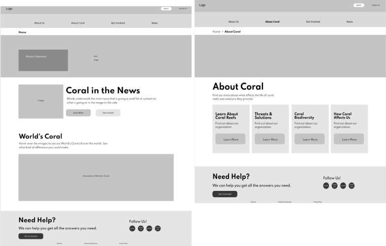
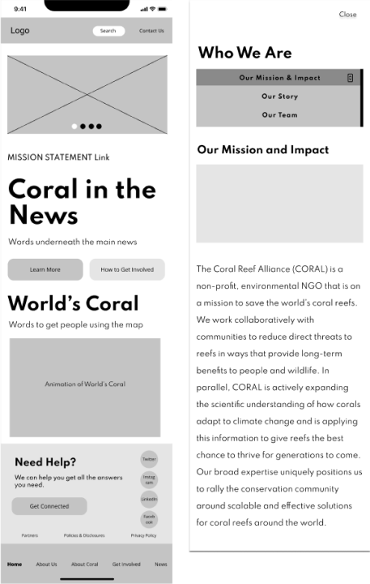
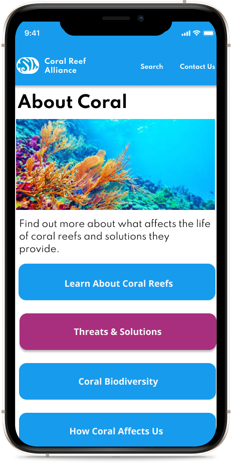

I was part af four person team tasked with redesigning a responsive web design in both mobile and desktop views for the non-profit organization Coral Reef Alliance. Below you will find the story of how the redesign was created. This includes all the steps which were taken to preform the design along with explaining the difficulties that had to be overcame and why the design choices were implemented.
The research phase began with creating a proto person of who we thought our target user base would be. This allows us to get an idea of who might be using the website and begin to empathize with the user and the troubles they might be having.

After creating the user persona I did an heuristic evaluation on the existing Coral Reef Alliance website to see what it did well and what needed some changes. This showed that the navigation was a glaring need as it was not laid out in a order that made sense and often made navigating the site painful. The lay out of the site was also inconsistent with texts and colors not remaining the same through out all the pages and the overall lay out being cluttered on some pages with inconsistent spacing.

Following the heuristic evaluation a competitor analysis was done in order to determine what other non-profits were or were not doing that would allow us to gain an advantage on them. This further backed up our heuristic evaluation by showing that some of the bigger name coral reef non profits had sites with less clutter, matching text sizes and colors throughout all their pages, as well as a navigation which allowed for easier use of the site.

During the reserach phase a survey was also conducted to see if we could find out any quantitative data that might give us insite into how to shape the website redesign. The data showed that the majority of people surveyed did care about the coral reefs, however, they had little to no knowledge on the dangers of coral reef destruction. Nor had any of them ever donated to any non profit organization, beit about coral reefs or otherwise.

Five user interviews were preformed and their data was gathered into an affinity map in order to group common themes so a better understanding of the data could be found. This turned out to be extremely valuable in backing up the data result from the survey. We were able to confirm that despite the users stating that they cared about coral reefs they knew very little about preservation efforts or the causes and effects of its destruction, nor had never donated to a non profit. However, the research also showed that the users were interested in learning more about the effects of coral reef destruction, but they did find research to be a frustrating task. This made it clear that information about coral reef destruction and it's preservation efforts needed to be clear and easy to find on the newly redesigned website.

Coral reefs are under attack from many factors such as global warming, overfishing, tourism, and pollution. We would aim to spread awareness of these negative effects while providing multiple pathways for one to get involved in conservation.
1) Now that the research phase has been concluded the problems we were trying to solve could clearly be defined. A value proposition was created which showed the areas in which we could provide the most impact to the usability of the website. It was determined that the following features should be the focus of the redesign;
2) Better calls to action in order to get the user involved with the website.
3) Chunk information into smaller pieces, often the user would feel overwhelmed by the amount of information on a single page. By changing this it allowed for a more pleasurable experience.
4) Immediately show ways to get involved, from our research it was evident that users wanted to get involved but were not sure how. By providing this information from the start it could increase the likelihood of the users getting involved,
5) More educational tools to spread awareness. the original site mentioned educational tools, however never really gave the tools for them. This is important because later it was actually scraped as feature to focus on due to time constraints and the original site not actually focusing on this.
Knowing that the navigation was a glaring issue the ideation phase began with a card sorting exercise in order to redesign a navigation that put common items together and made it more accessible. Every current navigation title on the existing website was wrote down on a note card and then randomly displayed on a white board. Next, the team collaborated and using the LATCH principles put the cards into an order that made more categorical sense.

With the navigation now have being sorted out a user flow could be created to show the path a user might take when accessing the website. From the research preformed earlier it was noted that many people did not donate to non profits because they were unsure if they could trust them. Knowing this, the about us and mission impact were likely to be the first pages accessed by a user in order to get an understanding about what the non profit was about. It was also known the the users would likely want to learn more about the threats the coral reefs faced and what solutions could be had. This made it clear that the next logical page to navigate to was the threats and solutions page. After learning about the website and about the dangers and effects of coral reed destruction, not might be the point in which the user decides to either make a monetary donation, or find other ways to get involved. The created user flow shows the user choosing one, or both, of these steps next.

The final step of the ideation phase was to begin sketching wire frames. Each member of the team sketched out a few screens of what they thought would be a good design based on the earlier research and the problems that were defined, The sketches were inspected and there was two main points of deliberation between our team. One was the mobile navigation, mainly where it should be located. The other was whether or not there should be a donate button on the home page. A few more usability tests were preformed to determine the course of action that should be taken. It was found that users preferred the navigation at the bottom of the page as it was easier navigate with your thumb while on a mobile view. It was also decided against having a donate button on the home pages as it made the user feel pressured to donate.

 
With a clear idea of what need to be accomplished low fidelity prototypes were created. The main goals during this prototyping phase were to lay down a base that could be iterated upon for our hi fidelity prototypes and accomplish the following goals:
1) Meaningful calls to action to engage and build trust in the organization.
2) Chunk information into small pieces to make them easier and quicker to scan.
3) Make the search bar, contact, and help features easy to find. In the original site the search bar was not easy to find and contact info was buried underneath the navigation.
4) Create a clear and logical navigation to make using the site an enjoyable and quick experience, allowing the user to quickly find what they are looking for and not get stuck.

Usability testing was once again done on our low fidelity prototypes before they were converted into high fidelity. Through the testing it was determined that the original mobile prototype had to many types of navigation on one page (primary, secondary, tertiary) which increased the amount of time it took for the user to learn how to use the site and created confusion. A decision was made to have the secondary navigation to be cards or buttons that would open overlays to display their information, this cutting down on clutter and confusion.


A style guide was created to make sure all UI elements of the final high fidelity prototype (buttons, alerts, typography, icons, etc.) matched from page to page and from mobile to desktop. Colors were carefully chosen to be a representation of the coral reefs; bright, colorful, and immersive. This was then applied to our low fidelity prototypes and the high fidelity porotype was born. A culmination of all previous steps in the design process now made into a single deliverable.

.png)
A final round of usability testing was done on the high fidelity prototypes in which further insite was gained which would allow for a more user friendly and less confusing website. On both the desktop version of the website our secondary navigation had a light blue background which made it look very similar to some of our disabled buttons and lead a few users to believe that those pages were infact disabled. A quick color change to make them look more like buttons and a label above the navigation made it much clearer what it was supposed to be. Also, on the mobile website teh clsoe button on the overlay pages was hard to find and locate, especially if the user had scrolled further down the page. A decision was made to add a brigher color and a drop shadow to the close butoon, as well as fixing its posistion so that it remained stagnant when scrolling.

In conclusion this turned out to be a really challenging redesign. The website had a lot of features which could have used the touch of a designer, but due to time constraints the team and I had to focus on the major points, such as the navigation, information chunking, and calls to action. These were the key points that the research had determined were the major factors in what would create a better overall usability experience for our users. Even then, it did not come easy. Many times the team and I found ourselves crossing paths on what we thought was the right direction to take, but thanks to tools such as usability testing we were able to figure out what it was the user was looking for and implement what we believe was the correct design decision.
1) Allowing users to rate and share volunteer experiences to increase trust in organization
2) Adding a virtual reality or augmented reality experience in an effort to increase empathy from users
3) Offering informative educational programs or videos to allow curious users to know more and build trust